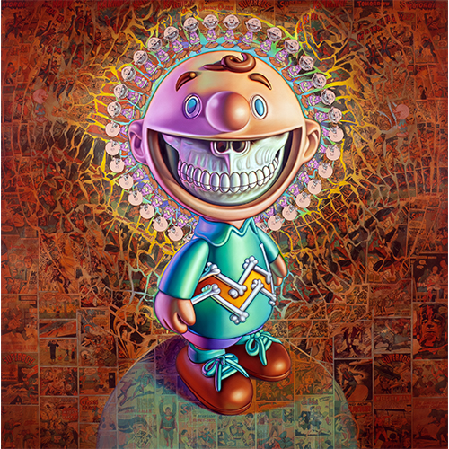

Exhibitions
Lazarus Rising, Elms Lesters Painting Rooms, London, United Kingdom, May 8–June 6, 2009.
Apocalypse Wow!, MACRO Future (Museo d’Arte Contemporanea di Roma), Rome, Italy, November 8, 2009–January 31, 2010.
Literature
Ron English, Fauxlosophy: The Art of Ron English (San Francisco: Last Gasp, 2008), p. 88. ISBN 978-0867196566.
Ron English, Lazarus Rising (London: Elms Lesters Painting Rooms, 2009), p. 23.
Ron English, Death and the Eternal Forever (Korero Press, 2014), p. 64. ISBN 978-0957664920.
Ron English, Original Grin: The Art of Ron English (Paris: Cernunnos, 2019), p. 14. ISBN 978-2374950938.
Ron English, Status Factory: The Art of Ron English (San Francisco: Last Gasp of San Francisco, 2014), p. 15. ISBN 978-0867197891. :contentReference[oaicite:0]{index=0}
Notes
The work’s inclusion in Lazarus Rising is documented in the exhibition catalogue.